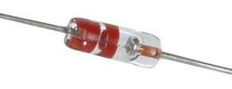
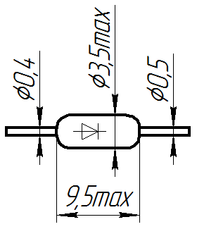
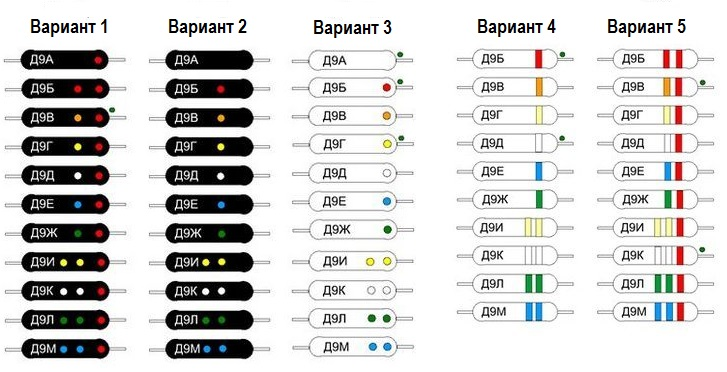

Диод Д9
Диод Д9 (Д9Б, Д9В, Д9Г, Д9Д, Д9Е, Д9Ж, Д9И, Д9К, Д9Л, Д9М) - германиевый, точечный.
Имеет стеклянный корпус и гибкие выводы. На корпусе диода Д9 нанесены цветные точки или кольца в качестве маркировки.
- Д9Б - красный
- Д9В - оранжевый
- Д9Г - жёлтый
- Д9Д - белый
- Д9Е - голубой
- Д9Ж - зелёный
- Д9И - два жёлтых
- Д9К - два белых
- Д9Л - два зелёных
- Д9М - два голубых
Выпускался по ГОСТ 14342-69.


Рис. 1 - Внешний вид и размеры диода Д9

Рис. 2 - Варианты маркировки диода Д9
Таблица 1
| Прямое напряжение (постоянное) | 1 В |
| Обратное напряжение (импульсное) | |
| Д9Б | 10 В |
| Д9В, Д9Г, Д9Д, Д9И, Д9К, Д9М | 30 В |
| Д9Е | 50 В |
| Д9Ж, Д9Л | 100 В |
| Выпрямленный ток (средний) | |
| Д9Ж, Д9Л | 15 мА |
| Д9В, Д9Е | 20 мА |
| Д9Г, Д9Д, Д9И, Д9К, Д9М | 30 мА |
| Д9Б | 40 мА |
| Прямой ток (импульсный) | |
| Д9Ж, Д9Л | 48 мА |
| Д9В, Д9Е | 62 мА |
| Д9Г, Д9Д, Д9И, Д9К, Д9М | 98 мА |
| Д9Б | 125 мА |
| Рабочая температура | -60...+70°C |
Указания и рекомендации по эксплуатации
- Интервал рабочих температур окружающей среды от -60 до +60 градусов.
- Включение диодов в схему должно производиться согласно полярности, обозначенной на диоде («+» - цветная точка или кольцевая линия, обозначающие одновременно группу диода).
- Работа диодов в совмещенных предельно допускаемых режимах не рекомендуется.
- Пайка диодов производится на расстоянии не менее 5 мм от корпуса диода с теплоотводом между корпусом диода и местом пайки, обеспечивающим температуру корпуса не более +60 градусов по Цельсию.
- Во избежание поломки, изгиб выводов производятся не ближе 3 мм от корпуса диода.
- Рабочее положение – любое.
Источники:
katod-anod.ru - Диод Д9: Д9Б, Д9В, Д9Г, Д9Д, Д9Е, Д9Ж, Д9И, Д9К, Д9Л, Д9М